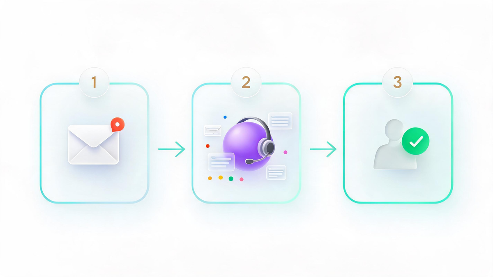

AI Agent Platforms (2026): Types, Pricing, How to Choose

📑 Table of Contents
- What Is an AI Agent Platform? (And What It Isn't)
- The 5 Types of AI Agent Platforms in 2026
- Enterprise Suites: Pricing Models Compared
- Customer Support: Platforms With Built-In AI Agents
- Builder Frameworks: What Developers Actually Use
- Compliance: HIPAA and Financial Services
- Where to Buy: AI Agent Marketplaces
- How to Build Your Own AI Agent for Free
- What Real Builders Actually Use (The Reddit Truth)
- How to Choose: 5 Questions Before You Commit
Key Takeaways
- "AI agent platforms" is five different markets: enterprise suites, code-first builders, low-code builders, support built-ins and marketplaces.
- Pricing is verified, not vibes: Fin at $0.99/resolution vs Zendesk seat tiers; Agentforce Flex Credits (launched at $2/conversation). Volume decides the winner.
- HIPAA-compliant = the vendor signs a BAA (Copilot Studio and Power Automate are documented); no AI model is compliant by itself.
- Real builders assemble: LiteLLM, MCP servers and observability layers beat all-in-one lock-in for experienced teams.
The search results look identical, but the products could not be more different. One query — "ai agent platforms" — surfaces Salesforce suites, developer frameworks, customer-support bots, marketplaces and free open-source toolkits, all claiming the same category. Search interest has climbed for weeks while buyers keep asking the same follow-up questions: which one fits a support team, which one survives a compliance review, and which ones cost nothing to try.
This guide separates the five real markets hiding behind one keyword, with pricing models verified in October 2026 and builder sentiment collected from working practitioners.
What Is an AI Agent Platform? (And What It Isn't)
An AI agent platform is any system that lets you deploy software which pursues a goal — making decisions, using tools, retrieving information and completing workflows — rather than just answering questions. A chatbot tells a customer what the travel policy is. An agent checks the policy, verifies the budget, books the flight and files the expense report.
That distinction matters commercially, because pricing follows capability: chatbot vendors charge per seat, while agent platforms increasingly charge per completed action. It also matters architecturally — a 2026 Reddit practitioner thread on r/agenticAI drew a clear line between "platforms" and the composable stacks experienced builders actually ship.
The 5 Types of AI Agent Platforms in 2026
After mapping the market, five distinct categories emerge — each with different buyers, pricing and risks:
| Type | Examples | Pricing signal | Best for |
|---|---|---|---|
| Enterprise suites | Salesforce Agentforce, Microsoft Copilot Studio, Amazon Bedrock, Google's Gemini enterprise agent platform, IBM watsonx | Credits, resolutions, per-user | Companies standardizing on one vendor |
| Builder frameworks | LangGraph, CrewAI, OpenAI Agents SDK, Microsoft Agent Framework | Free OSS cores, paid cloud layers | Engineering teams building custom |
| Low-code builders | n8n, Dify, Botpress, Voiceflow, Flowise | Free tiers → $50–89/mo | Business teams, solo operators |
| Support built-ins | Intercom Fin, Zendesk AI, Sierra, Maven AGI | $0.99–2 per resolution | Support and success teams |
| Marketplaces | AgentExchange, GPT Store, Microsoft Marketplace, AgentVerse | Free to browse; per-agent pricing | Buying prebuilt agents |
No single "best" exists — the categories solve different problems. The confusion is the product of vendor marketing: every vendor blog ranks its own category first.
Enterprise Suites: Pricing Models Compared
The enterprise tier consolidated around three pricing models in 2026. Salesforce Agentforce officially sells Flex Credits, Resolutions, or per-user licensing — it launched at $2 per conversation, and practitioners still report roughly $125 per user monthly for agent-assist add-ons.[2] Microsoft's Copilot Studio uses message-pack pricing, while Amazon Bedrock and Google's Gemini enterprise agent platform meter underlying model usage.[5]
| Platform | Pricing model | What's verified (Oct 2026) |
|---|---|---|
| Salesforce Agentforce | Flex Credits / Resolutions / per-user | $2 per conversation at launch; ~$125/user assist add-on reported |
| Microsoft Copilot Studio | Message packs | Model confirmed; exact rates vary by tenant |
| Amazon Bedrock (AgentCore) | Usage-metered | Enterprise-listed; details vary by region |
| Google Gemini enterprise platform | Usage-metered | Officially positioned for technical teams |
The practical takeaway: enterprise suites invoice unpredictably. Budget for a pilot quarter before committing.

Customer Support: Platforms With Built-In AI Agents
For the highest-intent question — which support platforms ship built-in agents — the 2026 market offers clear pricing math. Intercom Fin charges $0.99 per resolution on top of seat plans starting at $29.[3] Zendesk restructured its AI pricing after May 2026[4]; seat plans start near $25 per agent, with full AI features arriving around the $115 enterprise tier.
The crossover math: at 900 monthly resolutions, Fin's outcome pricing (~$891 committed) beats Zendesk's AI line (~$1,200); at 2,000 resolutions the gap widens to roughly $1,980 versus $3,000. Volume decides the winner, not brand loyalty. Enterprise buyers also weigh Sierra (custom contracts) and Maven AGI.
Builder Frameworks: What Developers Actually Use
LangChain's official 2026 guide compares seven frameworks[7] — LangChain, CrewAI, Microsoft Agent Framework, LlamaIndex Workflows, Google ADK and OpenAI's Agents SDK among them — while open-source trackers list ten, adding Dify, AutoGen and Mastra. GitHub adoption tells its own story: n8n holds roughly 204,000 stars, Dify about 154,000.[9]
The rough positioning: LangGraph for complex production processes, CrewAI for role-based multi-agent teams, n8n and Dify for visual business-team builders, and OpenAI's SDK for ecosystem-native deployments. Note that "framework" here means code-first — pricing is free cores with paid cloud layers, a deliberate wedge pattern across the category.
Compliance: HIPAA and Financial Services
Compliance questions dominate regulated buyers' searches, and the answer is procedural, not magical: a platform is HIPAA-compliant only if its vendor signs a Business Associate Agreement covering the agent. No AI model is inherently compliant — encryption, access controls and audit logging carry the rest.[14]
Microsoft's Power Automate and Copilot Studio are documented BAA signers[15], and healthcare-specific no-code platforms exist for covered entities. Expect BAA procurement to take 5–30 days, and remember the stakes: HIPAA violation averages run near $1.93 million per incident.[18] Financial-services buyers face no equivalent shortcut — the practical route is buying through cloud marketplaces where suites inherit the provider's compliance certifications, or self-hosting open source for full data control.
Where to Buy: AI Agent Marketplaces
"Where to buy" is now a real question with a real answer. Salesforce AgentExchange bills itself as a hub to "find, evaluate, buy, and deploy pre-built AI agents"[13]; OpenAI's GPT Store and Microsoft's marketplace distribute consumer and business agents; AgentVerse and Google's agent space cover the open ecosystem. Treat these like app stores: check ratings, verify the publisher, and start with trial deployments before procurement.
How to Build Your Own AI Agent for Free
Free is genuinely viable in 2026. AutoGen, Dify, Flowise, n8n and Haystack are all open source and free to self-host[12]; Botpress offers a free plan for small volumes; CrewAI and Dify sell cloud upgrades from $59–89 monthly when self-hosting becomes chore-work. The honest three-step starter: pick a self-hostable builder, connect one model API, automate one repeatable workflow end-to-end — then judge.
What Real Builders Actually Use (The Reddit Truth)
Vendor blogs rank themselves first; working builders tell a different story. In a July 2026 r/agenticAI thread, the highest-signal comment described no platform at all: "a mix — LiteLLM for routing, OpenTelemetry for instrumentation and Braintrust" for evals.[16] Another described deliberately exiting all-in-one platforms for a "boring" stack of Git, GitHub Actions, Strands SDK and MCP servers, "treating agent workflows like software projects."
Enterprise commenters confirmed the pattern: companies assemble — cloud agent runtimes plus open-source components for gateways, memory, observability and access control — because "platforms may lack tight security controls, fine-grained permission settings or extensive logging." Two structural complaints recur: streaming breaks in production, and mobile apps are notification mirrors.[17]
How to Choose: 5 Questions Before You Commit
- Does it handle your workflow natively — sales, support and ticketing together — or through brittle integrations?
- What is the real pricing at your volume — run the per-resolution math at 900 and 2,000 before signing.
- Will it pass your compliance review — will the vendor sign a BAA or equivalent, today, in writing?
- Is the mobile app a management tool or a notification mirror?
- What is the exit cost — can you export workflows and data if you outgrow it?
Five honest answers beat one vendor demo.
Frequently Asked Questions
Which customer support platforms have built-in AI agents?
Intercom Fin ($0.99/resolution), Zendesk AI, Salesforce Agentforce, Maven AGI and Sierra are the verified 2026 options; Fin leads on transparent outcome pricing.
What referral platforms work with AI agents?
Agents integrate with external platforms through APIs, webhooks and connector layers — n8n alone advertises 1,000+ integrations, and marketplaces like AgentExchange distribute partner-built agents. Specific "referral platforms" for agents remain thin; the integration layer is the real answer today.
Which AI agent platform is HIPAA compliant?
Whichever vendor signs a BAA covering the agent — Microsoft Power Automate and Copilot Studio are documented signers, and healthcare-specific no-code platforms exist. No model is compliant by itself.
Where can you buy AI agent platforms built for financial compliance?
Through enterprise cloud marketplaces — AWS, Azure and Google Cloud — where suites inherit the provider's certifications, or via self-hosted open source for full data control. Per-platform financial certifications should be confirmed with vendors directly.
How do you build your own AI agent for free?
Self-host open-source builders (Dify, n8n, Flowise, AutoGen, Haystack), use Botpress's free plan, connect one model API, and automate one workflow end-to-end before upgrading to paid cloud tiers.
📚 Sources & Citations (18)
- Salesforce — Agentforce platform & pricing options — www.salesforce.com
- Salesforce — Agentforce launch announcement ($2/conversation) — www.salesforce.com
- Intercom — AI agent pricing (Fin $0.99/outcome) — www.intercom.com
- Zendesk — AI pricing restructure 2026 — www.zendesk.com
- Google Cloud — Gemini enterprise agent platform — cloud.google.com
- Microsoft Learn — Agent Builder overview — learn.microsoft.com
- LangChain — Best AI agent frameworks 2026 — www.langchain.com
- Firecrawl — Best open-source agent frameworks — www.firecrawl.dev
- Sim.ai — Open-source agent platforms compared (GitHub stars) — www.sim.ai
- n8n — AI agent workflows & 1,000+ integrations — n8n.io
- Botpress — Low-code AI agent platforms (2026) — www.botpress.com
- AgentCenter — 25 AI agent platforms (free tiers) — www.agentcenter.cloud
- Salesforce — AgentExchange marketplace guide — agentexchange.salesforce.com
- Automation Anywhere — HIPAA compliant AI requires a BAA — www.automationanywhere.com
- Nirmitee — HIPAA-compliant agent platforms that sign a BAA — nirmitee.io
- Reddit r/agenticAI — What platforms builders actually use (Jul 2026) — www.reddit.com
- Reddit r/Jugl — We evaluated 12 AI agent platforms — www.reddit.com
- Integrate.io — HIPAA pipelines & average penalty costs — www.integrate.io